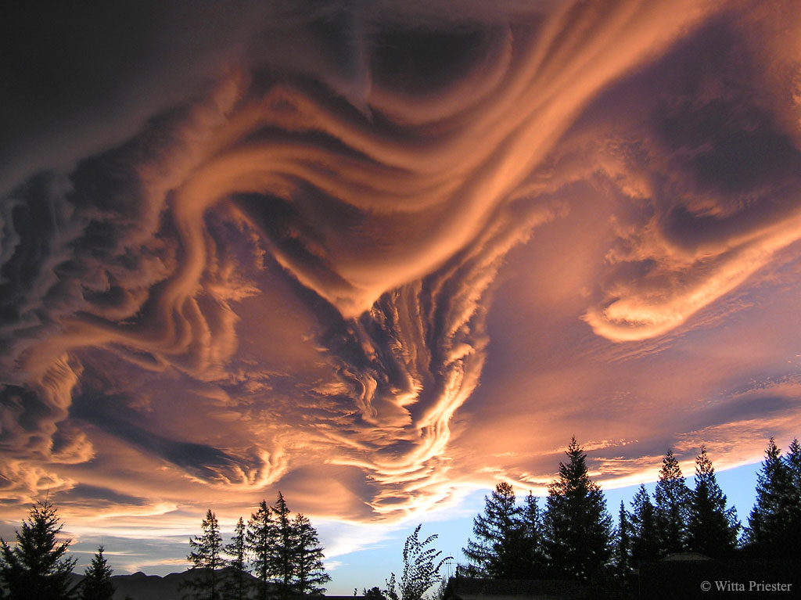

Astronomy Picture of the Day

The Spinning Pulsar of the Crab Nebula
Explanation: At the core of the Crab Nebula lies a city-sized, magnetized neutron star spinning 30 times a second. Known as the Crab Pulsar, it is the bright spot in the center of the gaseous swirl at the nebula’s core…